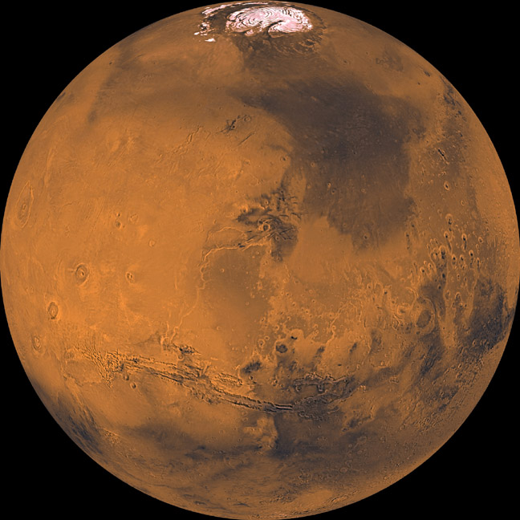

|
|
 MarsMars distinctively red global surface is distinct by many interesting features some like those on the Earth and others strangely different. The reddish color is caused by rust (iron oxide) in the soil. Some of these features are; volcanoes, canyon systems, river beds, cratered terrain, and dune fields. Of these features, the most interesting includes the apparently dead volcano Olympus Mons, which rises 23 km (~75,000 ft) above the surrounding plains and is the highest known peak in the Solar System. Valles Marineris is a giant canyon system that runs about 2,500 miles across the surface of the planet and reaches depths of 6 km or 4 miles (for comparison, the Grand Canyon is not more than 1 mile deep). The atmosphere of Mars is much thinner than Earth, with a surface pressure averaging 1/100th that at the surface of the Earth. Surface temperatures range from 113oC at the winter pole to 0oC on the dayside during summer. Although the length of the Martian day (24 hours and 37 minutes) and the tilt of its axis (25 degrees) are similar to those on Earth (24 hours and 23.5 degrees), the orbit of the planet about the Sun affects the lengths of the seasons the most. The atmosphere is composed mainly of carbon dioxide (95.3%), nitrogen (2.7%), and argon (1.6%), with small amounts of other gases. Oxygen, which is so important to us on earth, makes up only 0.13% of the atmosphere at Mars. There is only one-fourth as much water vapor in Mars atmosphere. Mars has two moons which are called phobos and deimos. |